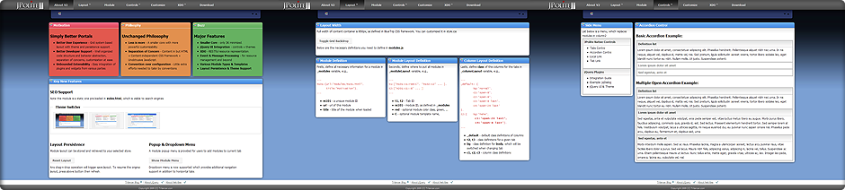

About JPolite
JPolite is a pure front-end portal framework based on jQuery & BlueTrip CSS, with a handful of jQuery plugins integrated.
It provides a compact yet powerful foundation for custom AJAX web applications with Netvibes-like user experiences.
V2.14 is a minor revision to stay compatible with jQuery 1.4.
